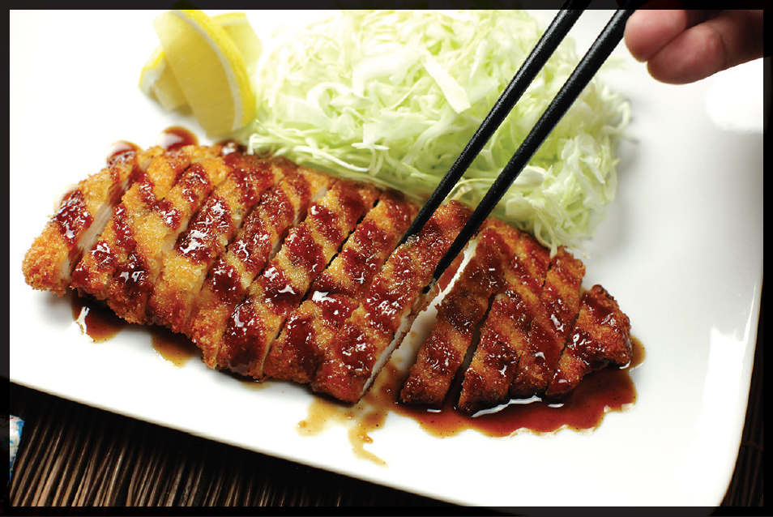
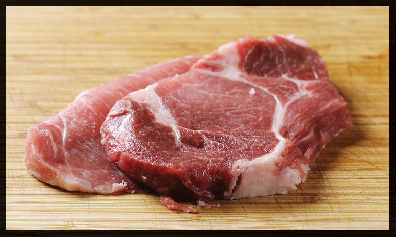
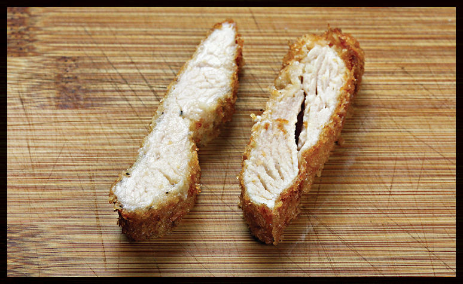
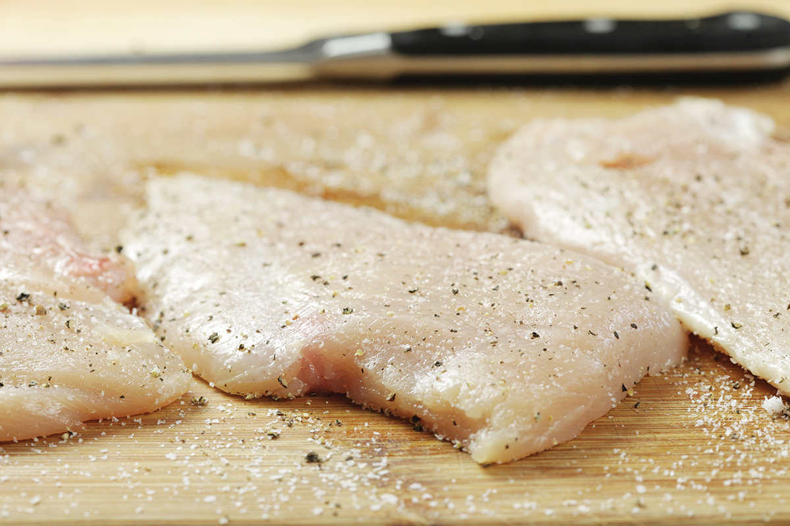
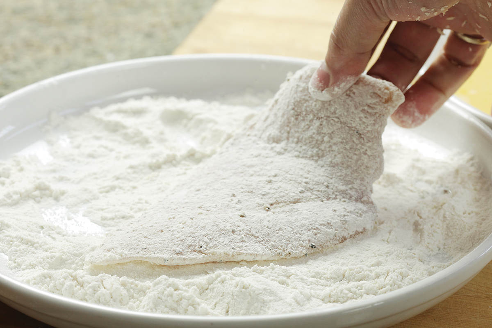
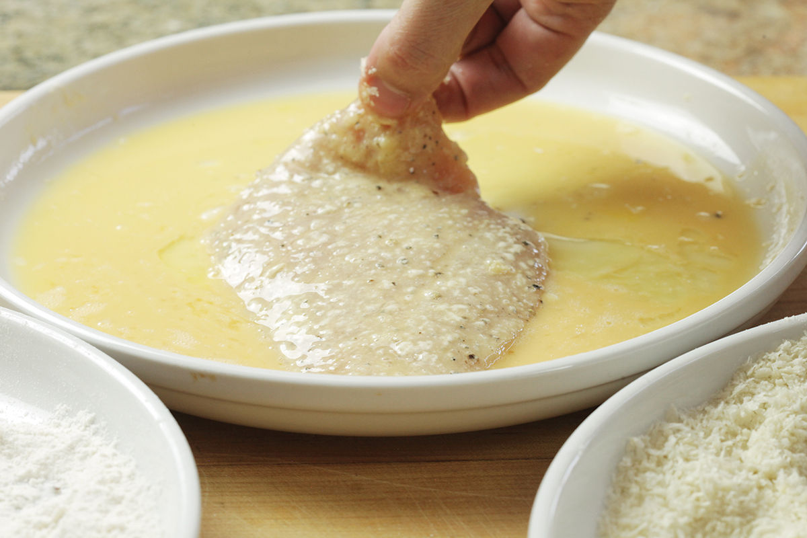
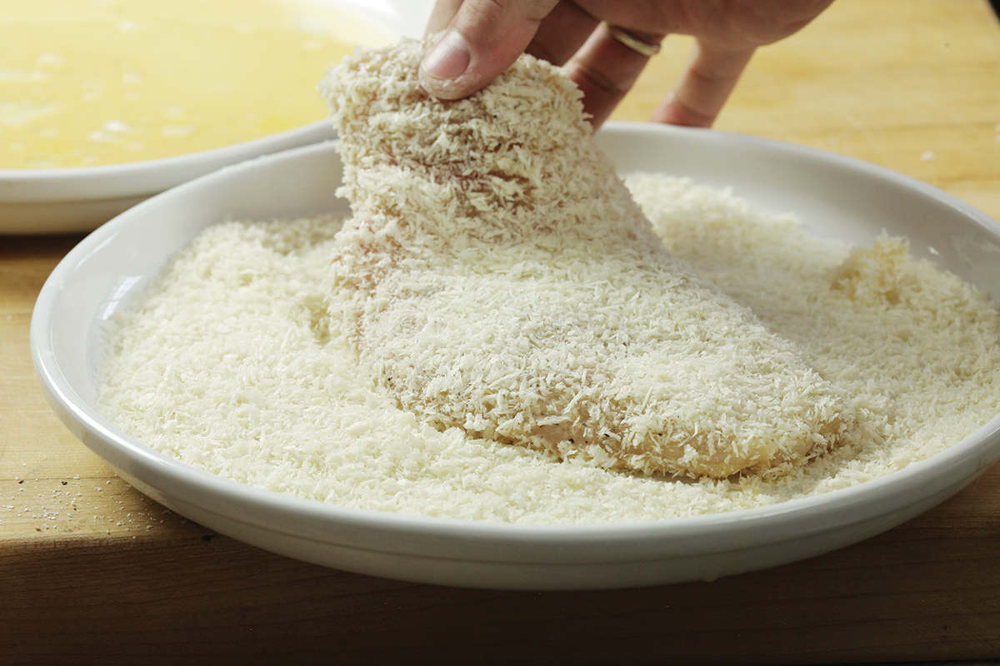
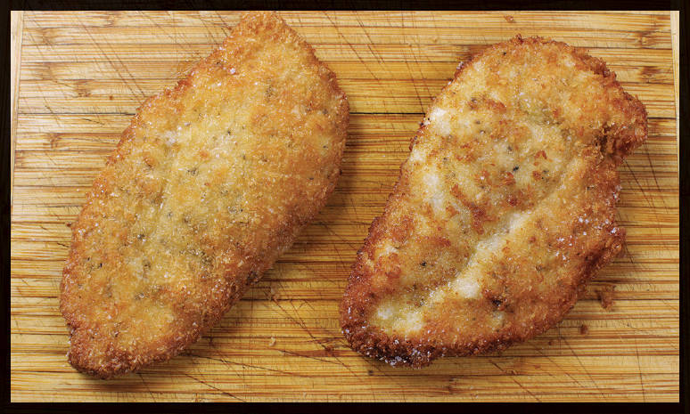
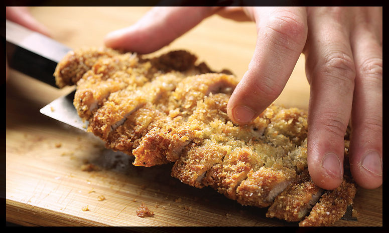

SWEET AND SPICY KOREAN CHILE SAUCE
|
Yield Makes about ¾ cup |
Active Time 10 minutes Total Time 10 minutes |
INGREDIENTS
¼ cup (60 g) gochujang
2 tablespoons (30 ml) light soy sauce or shoyu
1 tablespoon (15 ml) rice vinegar
3 tablespoons (35 g) dark brown sugar
2 teaspoons (5 g) minced garlic (about 2 medium cloves)
2 teaspoons (5 g) minced fresh ginger (about ½-inch segment)
1 tablespoon (15 ml) roasted sesame oil
DIRECTIONS
Combine the gochujang, soy sauce, vinegar, sugar, garlic, ginger, and sesame oil in a large bowl and whisk to combine. Gochujang can be inconsistent in its thickness. Add up to 2 tablespoons (30 ml) water until the sauce is just barely thin enough to drip off a spoon when inverted. Serve with Korean Fried Chicken.

JAPANESE KATSU AND THE MAGIC OF PANKO COATING
If you weren’t familiar with Japanese cuisine, you might not think there was anything particularly Japanese about katsu, a simple dish of breaded and fried cutlets. But if you’ve ever been in a Japanese shopping mall food court, you’ve seen that, just like pizza in the United States, katsu has established itself so firmly in the food culture that it could be considered a national comfort-food staple. It’s an easy dish to love. Juicy chicken or pork cutlets in an incredibly crisp layer of golden brown bread crumbs, with a sweet and savory sauce and a side of crisp shredded cabbage and steamed white rice. It’s a simple and delicious weeknight meal, whether you buy it at the food court or fry it in your own kitchen.
Given how popular panko-style bread crumbs are these days, even in non-Japanese recipes, there’s not really a fundamental difference between katsu and any other style of breaded and fried cutlets. Only two things distinguish it. First, katsu must be made with panko crumbs (as opposed to European-style breaded cutlets). And second, it must be served with katsu sauce. Katsu simply wouldn’t be katsu without a big ol’ drizzle of the thick, savory-sweet, Worcestershire-esque stuff.
I have a recipe for my own homemade version of the sauce that’ll kick you in the mouth with flavor, but in all honesty, to me katsu sauce is sort of like ketchup: the homemade version will never beat Heinz. Except, in the case of katsu sauce, the brand is Bull-Dog. The white-capped bottle has been a fixture in my fridge from the time of my very earliest memories, and its flavor is intimately linked to katsu in my mind.
The word katsu is gairaigo, the Japanese term for words borrowed from other languages. The simplest phonetic translation of “cutlet” to Japanese vocalizations is katsuretsu, which in turn is shortened to katsu. Add ton—the Sino-Japanese word for “pork”—to the front of that and you’ve got tonkatsu, or breaded fried pork cutlets (not to be confused with tonkotsu, which is pork-based ramen broth). Got it? Good. Let’s move on to more fun stuff.
Meat Choices
Katsu is most often made using pork, with chicken coming in a close second, though beef or even ham or hamburger is not uncommon in parts of Japan. I typically stick with pork or chicken, or firm tofu or tempeh if I’m in the mood for a nonmeaty version.
When using pork, you want cutlets that are nice and fatty so that they stay juicy while cooking. My favorite is pork sirloin cutlets. You could also use pork loin cutlets, from either close to the shoulder (blade chops) or as close to the sirloin as possible. (Chops cut from the back end of the blade are essentially the same as those cut from the front end of the sirloin, where the two sections meet.) Avoid center-cut rib chops, which are better when thick and pan-seared or grilled. So long as it’s got good striations of fat and a mix of light and dark meat, it’ll work out fine.
Ask for cutlets that are between four and five ounces apiece and pound them gently to a quarter-inch thickness. The easiest way I’ve found to do this is to split open the sides of a heavy-duty zipper-lock bag, place the cutlet inside, and gently pound it with a meat mallet or the bottom of a heavy skillet. Mindless bludgeoning can lead to torn meat and holes: You want to use firm but gentle pressure, working at the uneven spots.

With chicken, either breasts or thighs will do just fine, though they need to be treated a little differently. Boneless, skinless chicken thighs can be treated very much like pork cutlets: just pound them inside a zipper-lock bag. Whole chicken breast halves are too big (especially considering the massive chickens you find at the supermarket these days), so the first step is to split them into cutlets. It’s easy to do—if you’ve never done it before, just follow the step-by-step guide on here.
The other problem with chicken breast is that it’s lean and prone to drying out, but a quick brine solves that problem. Take a look at these two breast slices:

The slice on the left was brined and remains smooth and juicy, while the unbrined cutlet on the right dries out more.
Was the nonbrined chicken bad? No, not by any means. But if you’re in a rush, I’d strongly suggest using chicken thighs or fattier pork cutlets, both of which are less prone to drying out than chicken breast. If using breasts, I’d salt them and let them rest for a minimum of three to four hours.
Breading
Katsu is made using the classic breading technique of dredging in flour, dipping in egg, and coating with bread crumbs. The easiest way to do this is to place flour, beaten eggs, and panko in three shallow bowls, pie plates, or rimmed plates. Working with one cutlet at a time, transfer it to the flour with one hand (designate this the “dry” hand) and turn to coat, then pick it up with the same hand and transfer to the egg plate. Using your other hand (the “wet” hand), turn it to coat in the egg, lift, let the excess drain off, and transfer to the bread crumbs. Using your dry hand, lift bread crumbs and scoop them on top of the cutlet, then press down so they adhere. Once it’s thoroughly coated, you can safely lift the cutlet with your dry hand, flip, and continue pressing crumbs into it until a thick layer is built up all over.




Transfer the breaded cutlet to a plate and repeat with the remaining ones.
One thing I’d always wondered about: Why do we bother dipping cutlets in flour before we dip them in egg? Surely the egg is gonna stick to a bare chicken cutlet well enough to get a good coating of bread crumbs, isn’t it?
I tested it out, cooking two cutlets side by side, one with the standard flour/egg/bread crumb treatment and the other with just egg and bread crumbs. Here’s what they looked like:

You can plainly see that the flour does indeed help create a more even coating, which in turn leads to more even browning. If you’ve ever tried to paint a wall without first laying on a coat of primer, you’re familiar with the patchy effect seen in the cutlet on the right. Flour is like the primer of the breaded-and-fried-cutlet world. Flouring also helps produce juicier meat: because the chicken with no flour had bald patches where the coating was completely stripped away, some of the delicate chicken meat came in direct contact with the hot oil, causing it to turn stringy and dry in spots. Skipping the flour is a tempting shortcut, but it’s one that should be avoided.
Frying
Frying katsu is very straightforward and can be done either in a skillet in a shallow amount of fat or in a wok with a deeper fat layer. I prefer doing it in a wok, as you get more even browning all over with minimal fussing. Many recipes recommend flipping only once during cooking, but I found that flipping multiple times actually resulted in more evenly browned cutlets. The key is to let them cook on the first side until the breading is set enough that you can flip without scraping it off. About a minute and a half is good. Then cook on the second side for another minute and a half and spend the remaining time flipping the cutlets frequently until they’re perfectly golden brown.
Katsu is typically served with chopsticks, which means you’ll need to cut it up in the kitchen before it hits the table. Use a sharp knife to cut the cutlets into thin strips.

Serve the katsu with finely shredded cabbage (an inexpensive mandoline makes short work of that), some lemon wedges, and a good drizzle of katsu sauce. If you want to go full-on Japanese, some steamed white rice with Japanese pickles also makes a great side dish.
It’s a cutlet! It’s Japanese schnitzel! It’s Asian Milanese! It’s katsu! Call it whatever you want. I call it delicious.